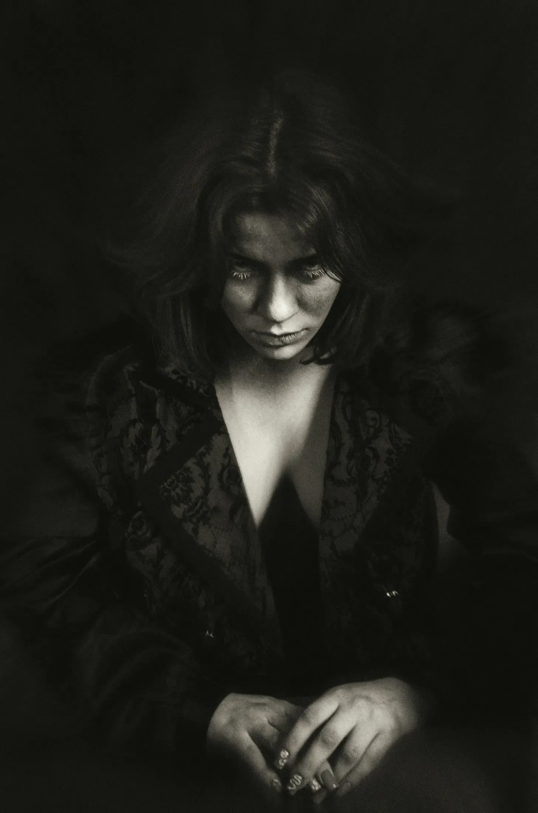

비명을 지르며 도망가는 관광객을 골목길로 쫓아가면서, 오늘 밤의 모험을 위해 좀 더 실용적인 신발을 신었어야 했나 하는 생각이 들었다. 스틸레토 힐은 처음에는 ‘섹시한 포식자’ 스타일로 좋은 선택처럼 보였지만, 지금은 오히려 내 속도를 늦추고 있었고 조약돌 위에서 끔찍한 소음을 내고 있었다. 딸각, 딸각, 딸각. 기습의 요소는 이미 날아갔다. 패션에 민감한 뱀파이어 룸메이트 에스메랄다와 사냥 복장의 실용성에 대해 진지한 대화를 나눠야겠다고 마음먹었다.
[As I chased the screaming tourist down the alley, I wondered if maybe I should’ve worn more sensible shoes for tonight’s escapade. The stilettos had seemed like a good idea at the time—very “sexy predator chic"—but now they were just slowing me down and making an ungodly racket on the cobblestones. Clack, clack, clack. So much for the element of surprise. I made a mental note to have a serious talk with my fashion-forward vampire roommate, Esmeralda, about the practicality of hunting attire.]
관광객은 "날 잡아먹어, 난 맛있어"라고 외치는 듯한 하와이안 셔츠를 입은 통통한 남자였는데, 어깨 너머로 힐을 신고도 자신을 따라잡으려는 나를 보고는 접시만한 크기로 눈이 커졌다. 그는 다시 한번 비명을 지르며 속도를 내보려 했지만, 그의 슬리퍼가 그를 배신했다. 그는 비틀거리며 팔을 허우적거리다가 더러운 골목바닥에 얼굴을 처박았고, 그 소리는 벽돌 벽에 메아리쳤다.
[The tourist, a portly fellow with a Hawaiian shirt that screamed "eat me, I’m delicious,” glanced over his shoulder. His eyes widened to the size of dinner plates when he saw me gaining on him despite my footwear handicap. He let out another shriek and tried to put on a burst of speed, but his flip-flops betrayed him. He stumbled, arms windmilling, and face-planted onto the grimy alley floor with a thud that echoed off the brick walls.]
나는 터무니없이 높은 힐을 신은 채로 위태롭게 비틀거리며 그의 옆에서 멈춰 섰다. “거기 괜찮으세요?"라고 물었다. 뱀파이어도 예의는 지켜야 하니까. 우리 어머니가 (영면하시길) 내가 예절 수업을 잊었다고 생각하시면 관 속에서 벌떡 일어나실 것이다.
[I skidded to a halt beside him, teetering precariously on my ridiculous heels. "You okay there, buddy?” I asked, because even vampires have manners. My mother, rest her undead soul, would roll over in her coffin if she thought I’d forgotten my etiquette lessons.]
그가 헐떡이며 뒤로 굴렀고, 이마의 끔찍한 찰과상에서 이미 진물이 나오기 시작했다. 굉장해. 이제 그는 아스팔트와 절망의 맛이 나겠군. 잠시 반창고를 건네줄까 고민했지만, 그러면 잘못된 신호를 보낼 것 같았다.
[He rolled over, wheezing, a nasty scrape on his forehead already starting to ooze. Great. Now he was going to taste like asphalt and desperation. I briefly considered offering him a Band-Aid but realized that might send mixed signals.]
“제발요,” 그가 헐떡이며 말했다. “절 잡아먹지 말아주세요. 저에겐 아내와 아이들, 그리고 버블스라는 이름의 금붕어가 있다구요.”
[“Please,” he gasped, “don’t eat me. I have a wife and kids and a goldfish named Bubbles.”]
나는 한숨을 쉬며 갑자기 불멸의 세월이 무겁게 느껴졌다. 어두운 골목에서 300년 동안 먹잇감을 쫓아다닌다는 게 정말 소녀의 열정을 꺾어놓을 만했다. “이봐요, 친구, 난 당신을 잡아먹진 않을 거예요. 그건 그냥 역겨워요. 난 그저 당신의 피를 마실 뿐이에요. 거기엔 차이가 있다구요.”
[I sighed, suddenly feeling the weight of my undead years. Three centuries of chasing down meals in dark alleys can really take a toll on a girl’s enthusiasm. “Look, pal, I’m not going to eat you. That’s just gross. I’m going to drink your blood. There’s a difference.”]
그는 잠시 공포를 잊은 채 혼란스러운 표정으로 나를 바라보았다. “그래요?”
[He blinked at me, confusion momentarily overriding his terror. “There is?”]
“당연하죠! 소를 먹는 것과 우유를 마시는 것의 차이와 같아요. 음, 우유가 피였다면요. 그리고 소가 인간이었다면요. 그리고 그 인간이 당신이었다면요.” 나는 눈살을 찌푸렸다. “음, 아마도 이 비유는 좀 더 다듬어야겠네요. 사냥 나가기 전에 이런 설명들을 미리 연습해봐야 했는데.”
[“Of course! It’s like the difference between eating a cow and drinking its milk. Well, if the milk was blood. And the cow was a human. And the human was you.” I frowned. “Okay, maybe that analogy needs work. I should really workshop these explanations before I go out hunting.”]
관광객이 슬그머니 도망가려 하자, 나는 그의 요란한 셔츠 깃을 잡았다. 손가락에 닿는 옷감이 싸구려 같고 까슬까슬했는데, 형편없는 패션 센스가 피맛에도 영향을 미치는지 궁금해졌다. “자, 자, 이걸 더 어렵게 만들지 맙시다. 빨리 끝내줄 테니까, 끝나고 나서 구급차도 불러줄게요. 이 정도면 서비스가 괜찮지 않나요?”
[The tourist started to edge away, so I grabbed him by the collar of his garish shirt. The fabric felt cheap and scratchy against my fingers, and I wondered idly if bad fashion choices affected blood taste. “Now, now, let’s not make this harder than it needs to be. I promise I’ll be quick, and I’ll even call you an ambulance after. How’s that for service?”]
한밤중의 간식을 위해 송곳니를 드러내고 몸을 기울이려는 순간, 문득 한 생각이 떠올랐다. 나는 몸을 뒤로 빼며 의심스럽게 그를 쳐다보았다. “잠깐만요. 혹시 당신 유당불내증은 아니죠?”
[As I leaned in, fangs extended, ready for my midnight snack, a thought occurred to me. I pulled back, eyeing him suspiciously. “Wait a minute. You’re not lactose intolerant, are you?”]
관광객의 얼굴이 당황스러움으로 일그러졌다. “뭐라구요? 아니요, 전 아닌데요. 그게 이거랑 무슨 상관이죠?”
[The tourist’s face scrunched up in bewilderment. “What? No, I’m not. What does that have to do with anything?”]
나는 안도의 한숨을 내쉬었다. “아, 다행이네요. 식이 제한이 있는 사람의 피를 마시고 나서 안 좋은 반응이 일어난 적이 얼마나 많았는지 모르실 거예요. 마치 우주적 차원의 소화불량 같았거든요.”
[I breathed a sigh of relief. “Oh, thank goodness. You have no idea how many times I’ve had a bad reaction after feeding on someone with dietary restrictions. It’s like cosmic indigestion.”]
그는 잠시 공포를 잊은 채 이 정보를 이해하려 애쓰는 것 같았다. “뱀파이어도 소화불량이 생긴다구요?”
[He seemed to be processing this information, his fear momentarily forgotten. “Vampires can get indigestion?”]
“놀라실 거예요,” 나는 현명한 듯이 고개를 끄덕이며 말했다. “우리가 불멸의 존재이긴 하지만, 위장장애에서 자유로운 건 아니거든요. 자, 우리 어디까지 했죠?”
[“You’d be surprised,” I said, nodding sagely. “We may be undead, but we’re not immune to gastrointestinal distress. Now, where were we?”]
막 그의 포동포동한 목에 송곳니를 박으려는 순간, 골목길에서 목소리가 울려 퍼졌다. “야! 거기서 뭐하는 거야?”
[Just as I was about to sink my fangs into his pleasantly plump neck, a voice echoed down the alley. “Hey! What’s going on back there?”]
나는 송곳니가 관광객의 피부에 거의 닿을 뻔한 상태로 굳어버렸다. 손전등 불빛이 골목 벽을 훑고 지나갔다. 굉장해. 경찰이라. 이 오늘 밤의 코미디 같은 실수들을 완벽하게 마무리하기에 딱이었다. 순간 뱀파이어의 속도로 사라지는 것을 고려했지만, 이 터무니없는 힐을 신고 있다는 걸 깨달았다. 작년 뱀파이어 무도회에서 뼈저리게 경험했듯이, 초자연적인 민첩성과 15센티미터 힐은 잘 어울리지 않는다.
[I froze, fangs millimeters from the tourist’s skin. A beam of light swept across the alley walls. Great. A cop. Just what I needed to complete this comedy of errors. I briefly considered using my vampire speed to disappear, but then I remembered I was wearing these ridiculous heels. Supernatural agility and six-inch stilettos don’t mix well, as I’d learned the hard way at last year’s Vampire Ball.]
“빨리요,” 나는 관광객에게 속삭였다, “우리가 키스하는 척하세요.”
[“Quick,” I hissed at the tourist, “pretend we’re making out.”]
그의 눈이 휘둥그레졌다. “뭐라구요? 하지만 방금 전까지 당신은—”
[His eyes bulged. “What? But you were just about to—”]
나는 그의 입술에 내 입술을 맞대며 그의 말을 끊었고, 이 어색한 상황에 대해 우리 둘 모두에게 속으로 사과했다. 발소리가 가까워졌고, 경찰이 “요즘 젊은 것들은"이라고 중얼거리는 소리가 들렸다. 나는 관광객에게서 희미하게 나는 마늘빵과 싸구려 맥주 맛을 무시하려 애썼다.
[I cut him off by pressing my lips against his, silently apologizing to both of us for this awkward turn of events. The footsteps grew closer, and I could hear the cop muttering something about "kids these days.” I tried to ignore the fact that the tourist tasted faintly of garlic bread and cheap beer.]
마침내 불빛이 우리에게 비춰졌을 때, 나는 떨어지며 최대한 당황하고 부끄러운 척을 했다. “아, 경찰관님! 저희는 그저, 음…” 나는 말끝을 흐렸다. 내 훌륭한 계획이 여기까지는 미치지 못했다는 걸 깨달았기 때문이다.
[When the light finally fell on us, I pulled away, trying my best to look flustered and embarrassed. “Oh, officer! We were just, um…” I trailed off, realizing I hadn’t thought this far ahead in my brilliant plan.]
인상적인 콧수염을 기른 중년의 경찰관은 완전히 흥미를 잃은 표정이었다. “어서 가시죠, 두 분. 여긴 러브호텔이 아닙니다.”
[The cop, a middle-aged man with an impressive mustache, looked thoroughly unimpressed. “Move along, you two. This isn’t a love hotel.”]
나는 격렬하게 고개를 끄덕이며 내 예정된 식사를 일으켜 세웠다. “물론이죠, 경찰관님. 정말 죄송합니다. 이제 가보겠습니다.” 나는 관광객에게 의미심장한 눈빛을 보내며 조용히 협조해주기를 바랐다.
[I nodded vigorously, helping my would-be meal to his feet. “Of course, officer. We’re so sorry. We’ll just be on our way.” I gave the tourist a meaningful look, silently willing him to play along.]
우리가 경찰관 옆을 지나칠 때, 관광객은 혼란스러운 눈빛으로 나를 쳐다보았다. 나는 그에게 윙크를 하며 “신세 졌어요"라고 입모양으로 말했다. 어쩌면 오늘 밤이 완전히 헛되지는 않았나보다. 새로운 친구도 사귀고, 법적 문제도 피하고, 사냥할 때 적절한 신발을 신어야 한다는 귀중한 교훈도 얻었으니 말이다.
[As we shuffled past the cop, the tourist shot me a confused look. I winked at him, mouthing "I owe you one.” Maybe the night wasn’t a total loss after all. I’d made a new friend, avoided an awkward run-in with the law, and learned a valuable lesson about appropriate footwear for hunting.]
우리는 모퉁이를 돌아 골목과 어리둥절한 경찰관을 뒤로 했다. 들리지 않을 만큼 멀어지자 관광객이 안도와 잔존하는 두려움이 뒤섞인 표정으로 나를 향해 돌아섰다. “그래서… 이제 어떻게 되는 거죠?”
[We rounded the corner, leaving the alley and the bemused cop behind. Once we were out of earshot, the tourist turned to me, his expression a mix of relief and lingering fear. “So… what happens now?”]
나는 한숨을 쉬며 배고픔을 다음 날로 미뤄야 한다는 걸 깨달았다. “이제, 내 친구여, 즉흥 연기 실력에 대한 감사의 표시로 야식 커피를 대접하겠어요. 그리고 어쩌면 당신의 금붕어에 대해 더 자세히 들을 수 있을지도 모르죠. 버블스였나요?”
[I sighed, realizing my hunger would have to wait for another night. “Now, my friend, I treat you to a late-night coffee as a thank you for your impromptu acting skills. And maybe you can tell me more about this goldfish of yours. Bubbles, was it?”]
그는 여전히 멍한 표정으로 고개를 끄덕였다. “네, 버블스예요. 걔는… 주황색이에요.”
[He nodded, still looking dazed. “Yeah, Bubbles. He's… he’s orange.”]
“흥미롭네요,” 나는 근처에 있는 24시간 식당으로 그를 안내하며 말했다. “저도 한때 애완동물이 있었어요. 블라드라는 이름의 박쥐였죠. 끔찍한 클리셰인 건 알지만, 정말 귀여웠어요.”
[“Fascinating,” I said, steering him towards a 24-hour diner I knew nearby. “You know, I had a pet once. A bat named Vlad. Terrible cliché, I know, but he was adorable.”]
우리가 걸어가는 동안, 나는 이 상황의 터무니없음에 웃음을 참을 수 없었다. 수백 년을 산 뱀파이어인 내가, 실용성 대신 스타일을 선택한 탓에 거의 저녁 식사가 될 뻔했던 사람과 커피를 마시러 가다니.
[As we walked, I couldn’t help but chuckle at the absurdity of the situation. Here I was, a centuries-old vampire, about to have coffee with my almost-dinner, all because I’d chosen style over practicality.]
다음번엔 확실히 평평한 신발을 신어야겠다. 그리고 아마도 혈액은행에서 운을 시도해볼지도 모르겠다. 덜 뛰고, 더 마실 수 있고, 조약돌 골목에서 멀쩡한 신발을 망칠 위험도 없을 테니.
[Next time, though, I’m definitely wearing flats. And maybe I’ll try my luck at a blood bank instead. Less running, more drinking, and no risk of ruining perfectly good shoes on cobblestone alleys.]